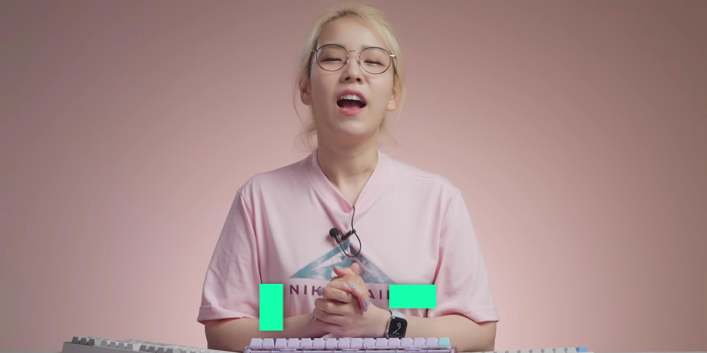
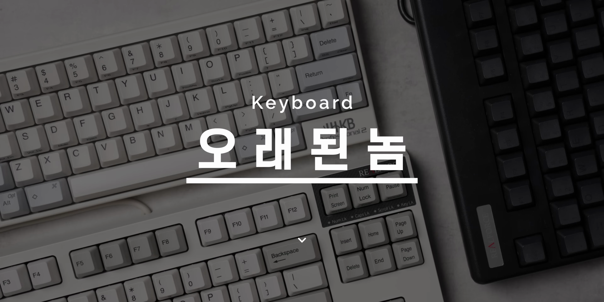
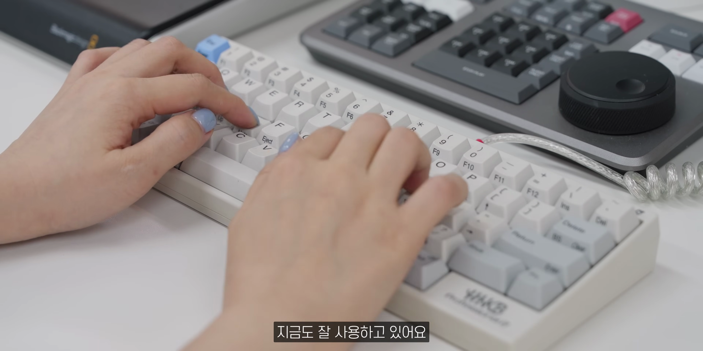
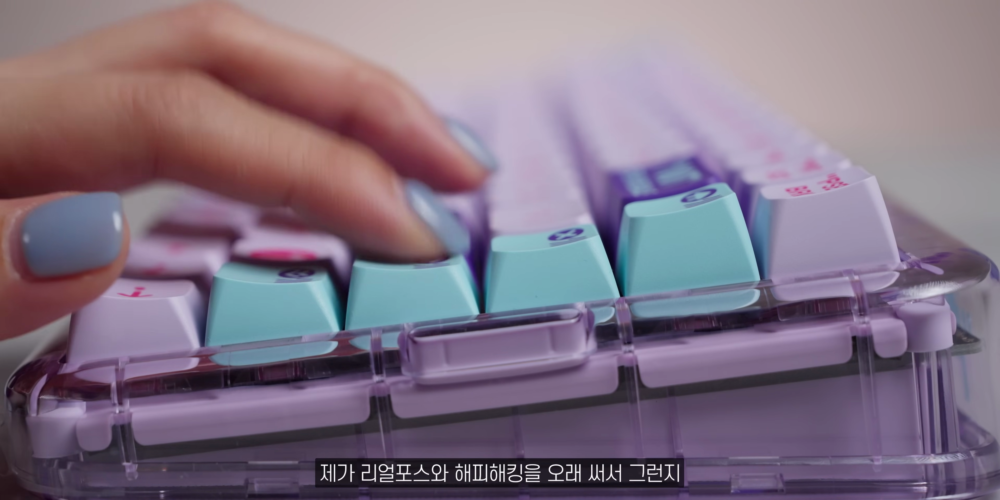

이번 포스팅에서는 키보드를 활용하여 집중력을 높이고 기분 전환을 돕는 다양한 방법에 대해 다녀보겠습니다. 사용하던 키보드를 꺼내어 재조명하고, 키보드의 키감과 배열이 업무에 미치는 영향을 살펴보려 합니다. 
출근 후 느끼는 무기력
- 기분 전환의 필요성
- 키보드 변경의 효과성
출근하자마자 느끼는 무기력함을 극복하기 위해 기분 전환이 필요하다. 키보드의 교체는 그런 기분 전환을 가능하게 해준다.

집중력 향상 방법
- 다양한 키보드 사용
- 타이핑 리듬 변화
다양한 키보드를 사용하여 타이핑 리듬을 변화시키면 집중력이 높아진다. 특히 기분이 좋거나 새로운 키보드를 사용하면 더욱 효과적이다.

키보드와 나의 이야기
- 첫 유튜브 영상은 키보드
- 이전 회사원 시절의 경험
내 첫 유튜브 영상이 키보드에 관한 것이었고, 회사원 시절에 키보드에 대한 높은 관심이 있었다.

해피해킹 키보드의 장점
- 좋아하는 키감
- 작은 설치 공간
내가 가장 좋아하는 키보드는 해피해킹이다. 키감이 만족스럽고, 작은 공간을 차지해 책상에서 유용하게 사용된다.
리얼포스 키보드의 활용
- 단축키와 방향키의 편리함
- 타이핑이 아닌 작업에 적합
리얼포스 키보드는 단축키와 방향키를 자주 사용하는 작업에 적합하며, 키감 또한 훌륭하다.

최근 구매한 키보드에 대한 리뷰
- 리얼포스 R3의 만족도
- 디자인과 기능의 조화
최신 모델인 리얼포스 R3는 디자인과 기능 모두 만족스럽다. 하지만 몇 가지 아쉬운 점도 존재한다.

키보드의 중요성
- 업무에 있어 필수적인 도구
- 소소한 변화가 기분에 미치는 영향
키보드는 현대 사회에서 없어서는 안 될 도구로, 작은 변화가 하루 종일 만족스러운 기분과 생산성에 영향을 미친다.
Tags: #키보드 #기분 전환 #집중력 #리뷰 #해피해킹 #리얼포스 #생산성 #타이핑 #기계식 키보드 #개인적 경험